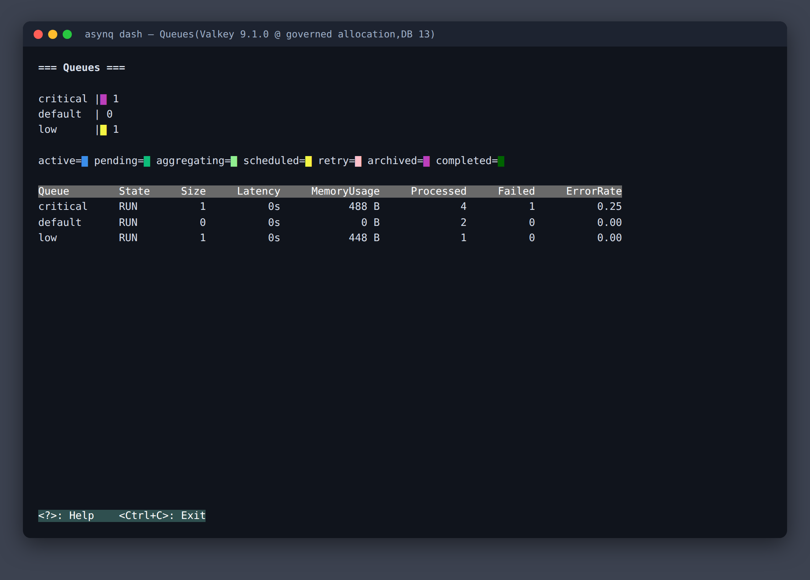

✅
Readiness 裁決機制已建立(2026-06-07):首份 runtime-backed 裁決
SPEC-008 review.md 已對明列 surfaces 出具 verdict(全套測試綠 + live captures)。本頁功能卡片的 Readiness State 自此
沿用該裁決;未列入裁決範圍者維持 not_assessed。
SPECS.md 的 ✅ 仍僅指 governance 完成度。本頁所有命令輸出均為 fork 環境(Valkey 9.1.0,registry-governed allocation)真實擷取;evidence 標籤皆為 section-level。
1. Value Proposition(雙視角)
🏢 內部管理者視角
- 供應鏈風險收斂:依賴全面升級(go-redis 9.20、protobuf 1.36.11、Go 1.26 toolchain),CVE 面縮小;
tools/go.sum 砍掉 ~330 行陳舊傳遞依賴
- 維運成本極低:CI 單 job 27-28s、只在 PR→main 觸發(成本指示落實);權威測試 gate 在 local,GitHub Actions 帳單趨近零
- 可審計治理:`main`(消費)/`master`(upstream 鏡像)分離、protected branch、FORK.md divergence 全記錄、upstream-sync skill 經 dry-run eval 驗證
- 漏洞掃描左移:
githooks/pre-push 對三個 module 跑 govulncheck(PR #9);push 時即攔截已知 CVE,證據:三 module 均 No vulnerabilities found
🌐 下游專案 / 外部視角
- 一行導入:
go get github.com/austinyuch/asynq@v0.26.0-team.1 — 無需 replace directive,版本顯式鎖定(pre-release suffix 防誤升)
- Valkey 相容性已驗證:CLI/Library/exporter 對 Valkey 9.1.0 全套真實測試;CLI 回報 compat
version 7.2.4
- 與 upstream 不脫節:鏡像分支 + 9 步 sync pipeline,upstream 修正可控週期合入
2. Amazon Backwards Press Release
團隊宣布推出 austinyuch/asynq v0.26.0-team.1 — 讓所有內部 Go 專案安全消費經硬化驗證的任務佇列
台北,2026 年 6 月 7 日 — 團隊今天宣布其維護的 Asynq fork 首個正式版本,一個對 Valkey 完整驗證、依賴全面硬化、且與上游保持可審計同步的 Go 任務佇列 library。
「過去每個專案各自 pin 上游版本,安全升級要全員重複勞動;現在硬化一次、全團隊受益,而且每一個 divergence 都有紀錄可查。」— 維護團隊
痛點:直接依賴上游意味著安全補丁節奏不可控、Redis→Valkey 遷移相容性無人驗證、以及 fork 後與上游漸行漸遠的歷史教訓。
解法:module path 改名讓下游以普通依賴方式消費(免 replace);`master` 維持 upstream 純鏡像,sync 走經 eval 驗證的 9 步 pipeline;全套整合測試在 Valkey 9.1.0 上作為權威 gate。
取得方式:go get github.com/austinyuch/asynq@v0.26.0-team.1;CLI:go install github.com/austinyuch/asynq/tools/asynq@tools/v0.26.0-team.1(均經 e2e 驗證)。
3. FAQ
內部管理者
Q:這個 fork 需要多少人力維護?
常態接近零:CI 全自動 gate、upstream sync 由 repo-local skill 引導(偵測→merge→rename 兜底→測試→PR),單次 sync 約一個工作時段。divergence 刻意保持小(deps/CI/docs),減少衝突面。
Q:導入後節省什麼成本?
安全升級從「N 個專案 × 每次」變成「1 次 fork 升級 + 下游 bump 版本號」;CI 成本依指示壓到單 job 27-28s 且只在 PR 觸發。
Q:供應鏈安全如何確保?
protected main(PR + required check)、master 鏡像 ff-only 不可污染、tags 不可移動、release train 順序(root→x→tools)保證 require 可解析;go.sum 完整鎖定。另有 pre-push hook 對 root/x/tools 三 module 跑 govulncheck(PR #9 起),已知漏洞在 push 前即攔截。
下游專案 / 外部
Q:與直接用 hibiken/asynq 差在哪?
功能 API 完全相同(目前與 upstream 0 commit 差距);差異在治理:依賴較新(go-redis 9.20 vs 9.14)、Valkey 驗證、版本由團隊控制節奏。
Q:支援哪些整合?
與 upstream 相同:Redis/Valkey(standalone/cluster/sentinel)、Prometheus(x/metrics + exporter)、cron 式週期任務;Web UI 可外接 Asynqmon(外部專案,未在 fork 驗證範圍)。
Q:未來 6 個月路線?
backlog hint(非承諾,見 NEXT_STEPS.md):跟隨 upstream release 週期 sync;有新功能合入時依 release train 慣例出 v0.26.x-team.N。
使用者
Q:導入前後改善什麼痛點?
導入前:背景工作自製 goroutine + cron,重試/封存/觀測全靠手寫。導入後:enqueue 一行、重試/唯一性/排程是內建選項、失敗任務 CLI 一眼可查(task ls --state archived 直接給出 last error)、Prometheus 指標開箱即用 — 本頁第 4 節全部有真實輸出佐證。
4. Core Features(evidence-backed)
📬 任務佇列核心:enqueue → weighted worker
多佇列權重消費(critical:default:low = 6:3:1)、並行 worker、unique 任務真實拒絕重複:
enqueued id=d93d6fc7 type=email:welcome queue=critical state=pending
duplicate rejected: cleanup:tmp -> task already exists
processed email:welcome user=1001 locale=zh-TW
♻️ 失敗處理:retry → archive 生命週期
handler 失敗自動退避重試,耗盡後封存且保留最後錯誤(billing:charge 示範):
queue size pending active sched archived processed
critical 1 0 0 0 1 4
id=c301e025 type=billing:charge last_err="card declined" retried=0/0
🖥️ CLI 維運(對 Valkey 後端)
asynq stats 真實輸出 — 當日錯誤率與 Valkey 的 Redis 相容版本一目了然:
Daily Stats 2026-06-07 UTC
processed failed error rate
7 1 14.29%
Redis Info: version 7.2.4(= Valkey 9.1.0 相容層)
full-integrationEvidence Source: live command output(seeded demo data)·
Coverage Tier: full-integration(section-level)·
Readiness State: PASS(
SPEC-008 review.md) ·
Source Ref: cli-stats-01.txt 📈 Prometheus 監控(真實 HTTP 服務)
tools/metrics_exporter 於 governed allocation port 9876 運行,36 個 asynq series:
asynq_queue_size{queue="critical"} 1
asynq_tasks_enqueued_total{queue="critical",state="archived"} 1
與 Inspector / CLI / dash TUI 數據四方一致(同一 seed 資料集)。
🛡️ Fork 治理與供應鏈(governance surface)
release train(root→x→tools tags)、消費端 e2e(go get 編譯執行 / go install → asynq version 0.26.0)、CI required check 實測觸發(27-44s pass,最近 3 runs 全綠)、upstream-sync skill 經模擬 31-commit delta 的 dry-run eval、govulncheck pre-push hook(三 module 實跑全綠)。
governanceEvidence Source: merged PRs #1-#9、tags、CI runs、eval 報告 ·
Coverage Tier: full-integration(governance lane)·
Readiness State: PASS(governance lane,
SPEC-008)·
Source Ref: FORK.md、.agents/specs/SPECS.md(SPEC-001~007)+ RTM R-09、RTM.md
🎛️ 互動式 Dashboard(asynq dash TUI)
佇列即時監看 TUI。文字層 + 圖形(色彩)層皆已 fork 環境實擷(tmux capture-pane -e → PNG):

=== Queues ===
critical |▇ 1
default | 0
low |▇ 1
Queue State Size Latency MemoryUsage Processed Failed ErrorRate
critical RUN 1 0s 488 B 4 1 0.25
呈現揭露:PNG 的文字/排版/色彩 100% 來自 dash 真實 ANSI 輸出;外層視窗框為呈現性質包裝。
5. UX Flow
flowchart LR
A[應用程式
Client.Enqueue] -->|critical/default/low| B[(Valkey / Redis)]
B --> C[Worker Server
ServeMux handlers]
C -->|成功| D[完成]
C -->|失敗| E[retry 退避]
E -->|耗盡| F[archived
CLI 可重派]
B --> G[asynq CLI
stats / task ls]
B --> H[metrics_exporter
:9876 /metrics] --> I[Prometheus / Grafana]
6. Gap Analysis
✅ 已解決(since last check:2026-06-07 首次生成)
- manual evidence assets 從未 commit(文件連結為死連結)→ 本次補齊 7 個 git-tracked
docs/manual/assets/*.txt
- dash TUI 首次取得 fork 環境真實擷取(tmux ×2)→ IL-003 dash 部分縮小為「僅圖形層」
gh pr create 預設指向 upstream,曾誤開 hibiken#1143(IL-R04)→ --repo 鐵則寫入 AGENTS.md + skill- govulncheck 無自動 gate →
githooks/pre-push 三 module 掃描(PR #9,RTM R-09)
- IL-001 結案:
make proto 重生 pb.go,descriptor austinyuch path,全套測試綠(SPEC-008)
- IL-003 結案:dash 圖形層 ANSI→PNG 實擷 +
docs/assets/ 逐檔 disposition(SPEC-008)
- review.md 裁決機制落地:首份 runtime-backed verdict(SPEC-008),本頁 readiness 自此有權威來源
- Cluster mode 首次驗證:3-node Valkey 9.1.0 cluster,root 公開 API 全套綠(209.96s)+ x/rate 綠;rdb 原始層 5 例外已定性(IL-004)
- dash.gif fork 重攝:6 frames 真實導覽動畫取代 upstream 素材
- CI flake 修復:client_test Z.Score 精確比較跨秒爆 → EquateInt64Approx(2),×3 驗證
- 較早基線:IL-R01(CI 觸發)、IL-R02(go install)、IL-R03(rename 漏網)、evidence 從無到全真實
⏳ 待解決(severity)
- Low:cluster mode 下 `internal/rdb` 5 個 ID-conflict 測試 CROSSSLOT(空 Queue 測試建構痕跡,IL-004;公開 API 層 cluster 全綠)
- Low:review.md 裁決與 commit 範圍綁定(main@9373c92 起);重大程式碼變動後需重跑權威 gate 再引用
7. Roadmap(backlog hint,非承諾)
- 已完成(2026-06-07):hardening → rename → 治理 → release train v0.26.0-team.1 → 文件(manual + review)→ govulncheck hook(PR #9)→ 文件再生 #2 → gap closeout(SPEC-008:IL-001/IL-003 結案 + 首份 review.md 裁決)
- 持續:upstream 有更新時走 upstream-sync pipeline(目前 0 behind);sync 後出 v0.26.x-team.N
- 候選(NEXT_STEPS hint):upstream sync 週期執行;IL-004 可考慮回饋 upstream(rdb 測試補 Queue 欄位)